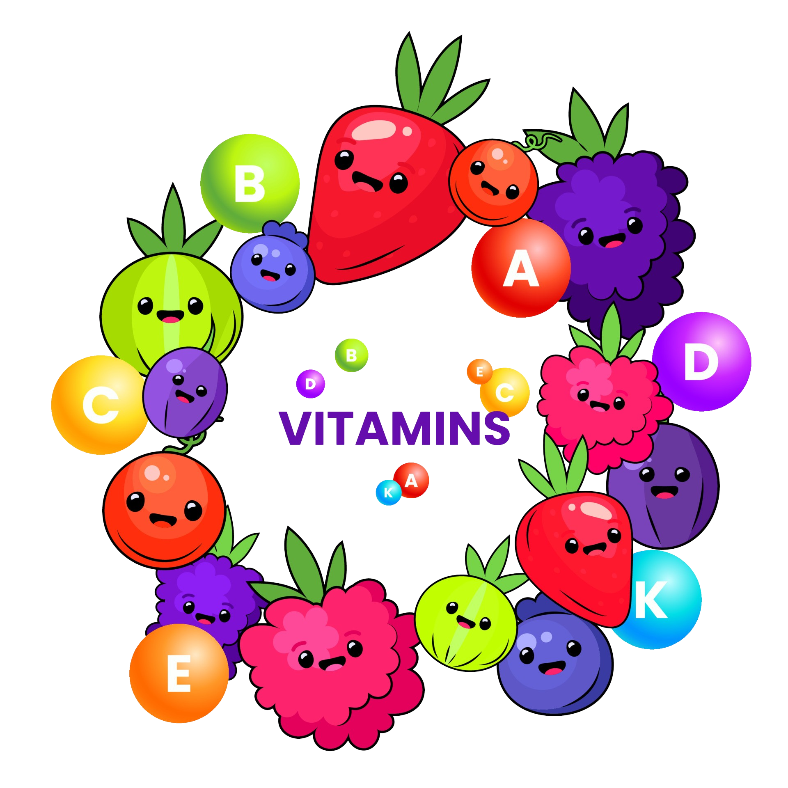

Keunggulan Menggunakan Jasa Vitaku Pakar Vitamin rekomendasi Vitamin yang Tepat dan Personal Vitaku menawarkan rekomendasi vitamin yang disesuaikan dengan kondisi kesehatan, gaya hidup, usia, dan tujuan pribadi pengguna. Dengan konsultasi yang mendalam, Anda bisa mendapatkan saran yang lebih spesifik untuk kebutuhan tubuh Anda, seperti meningkatkan sistem kekebalan tubuh, kesehatan kulit, atau meningkatkan energi.
Akses ke Pakar Nutrisi dan Kesehatan Melalui layanan Vitaku, Anda dapat berkonsultasi langsung dengan ahli gizi atau pakar kesehatan yang memiliki pengetahuan mendalam tentang nutrisi. Ini memungkinkan Anda untuk mendapatkan saran berbasis bukti ilmiah, yang lebih tepat daripada hanya mengandalkan informasi umum.
Meminimalisir Risiko Kesalahan Penggunaan Suplemen mengonsumsi suplemen yang tidak tepat atau berlebihan bisa berisiko. Dengan jasa Vitaku, Anda akan mendapatkan panduan yang aman dan sesuai dosis, sehingga risiko efek samping atau interaksi negatif dengan obat lain bisa diminimalisir.
Program Pemantauan Nutrisi yang Tepat Vitaku memungkinkan Anda untuk memantau asupan vitamin dan nutrisi sehari-hari.
Syarat & Ketentuan
